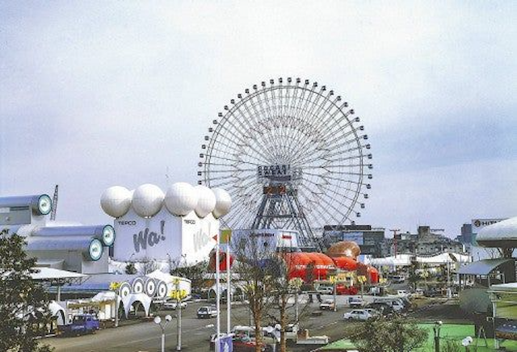
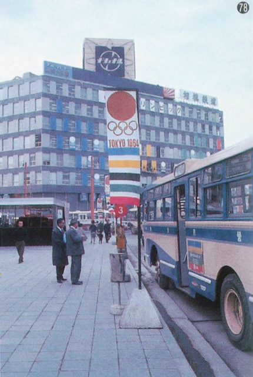
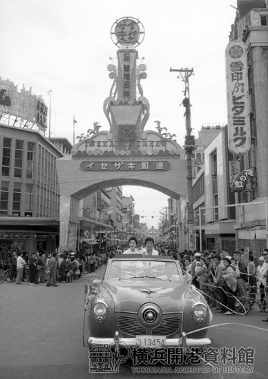
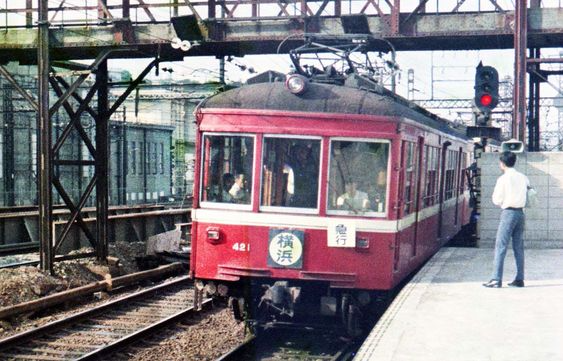
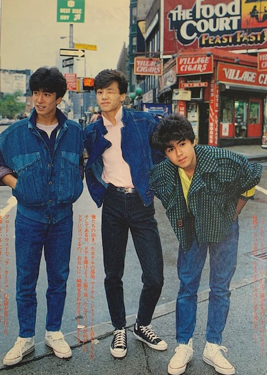
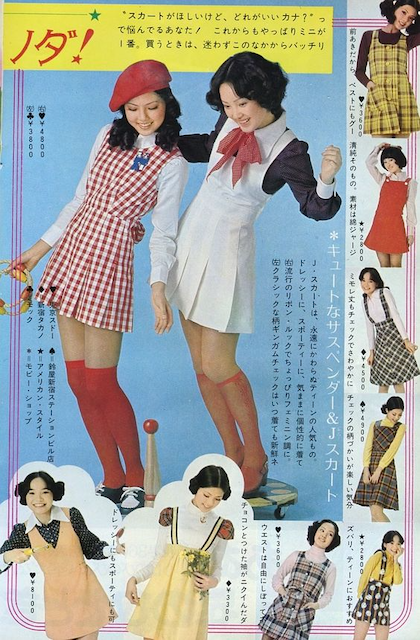
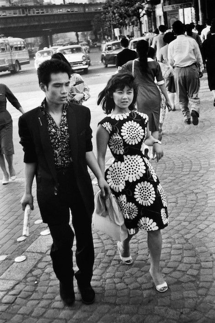
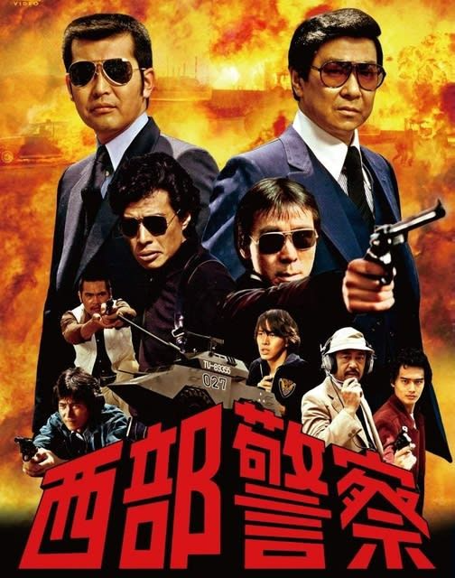
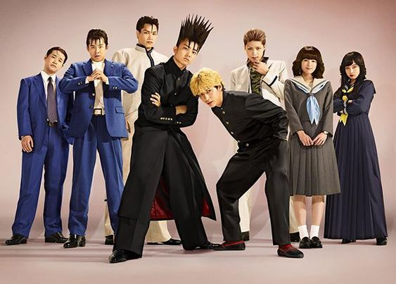

質問
①生まれ育った地域について教えてください。(どこか、どんな街か、どんなものが有名か、など)
②どんな学生時代を過ごしましたか？(部活動、何をすることが好きだったか、何が大変だったか、など)
③横浜で暮らそうと思ったきっかけはありますか？また、横浜で暮らしてどのくらい経ちましたか？
④横浜で住んでいて便利な点、不便な点などはありますか？
⑤お仕事はされたましたか？また、されていたら何をしていましたか？
⑥子育てエピソードがあれば教えてください。(大変だったこと、嬉しかったこと、後悔したこと、など)
⑦今だから言えるような、失敗話、苦労話などはありますか？
⑧最近ハマっている趣味などはありますか？
⑨若いうちにやっておいた方がいいことはありますか？
⑩今後生きていく上でのアドバイス(気をつけること、覚えておくべきこと、考え方、など)
記憶装置
横浜



伊勢佐木町

京浜急行

ファッション



ドラマ


『今日から俺は!!』現代の昔をイメージしたドラマ
